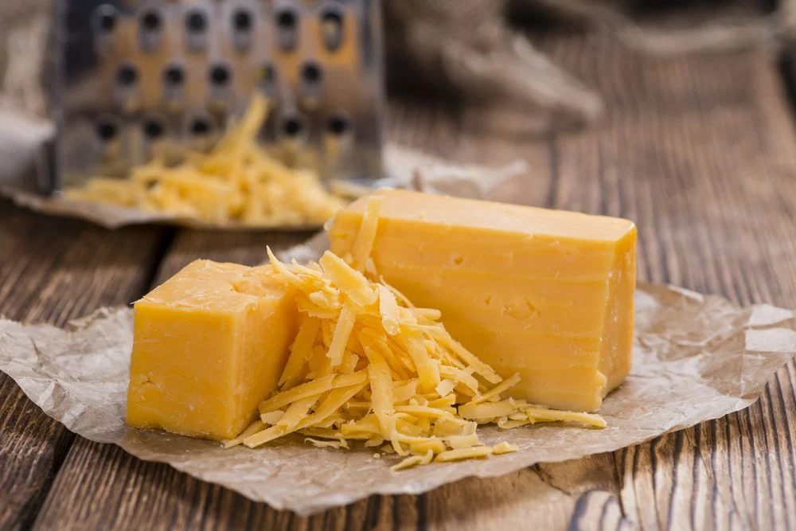

O Cheddar é um queijo originário da Inglaterra, conhecido por seu sabor pronunciado e sua cor amarelo pálida. Ele é famoso por sua versatilidade e pode ser encontrado em diversos pratos ao redor do mundo.
O queijo Cheddar é especialmente apreciado por seu sabor encorpado, que pode variar de suave a forte, dependendo de seu tempo de maturação. É frequentemente utilizado em sanduíches, hambúrgueres, molhos e como ingrediente principal em pratos gratinados.
Seu processo de fabricação envolve a coagulação do leite, seguido pelo corte da coalhada, prensagem e maturação por vários meses. Isso confere ao Cheddar suas características únicas de sabor e textura.
Experimente o Cheddar em diversas receitas para descobrir sua versatilidade e sabor marcante!